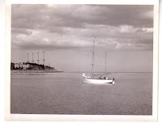
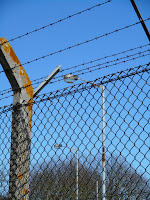
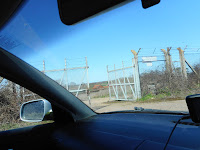
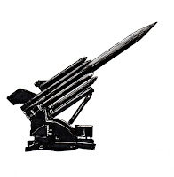
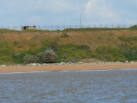
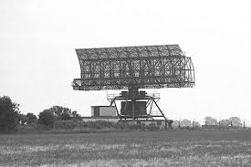

 |
| Peter Duck approaching Bawdsey early 1960s |
{kind=link}
I took a wrong turning.
A gate was open that should have been closed. Suddenly, unexpectedly, I was
inside some chain-link fencing and driving up a poorly maintained road. The
brick-built bungalow to my left showed broken windows and missing slates. There
were brambles. Unexplained structures in different stages of decay and
dereliction. The grass was ragged. There were no signs.
I knew this wasn’t
where I was meant to be. However modest the newly re-opened museum they would
surely have put up a notice for visitors. I should stop and turn back.
 |
| perimeter fence |
{kind=link}
I got out of the car.
Looked at the patch of concrete. Stepped onto it. Wondered about its function
when this had been a working RAF base.
A young man in
country clothes came hurrying across the grass. He told me the field was
private. I shouldn’t be here. I must leave.
 |
| open gate |
{kind=link}
This seemed to bother
him. He explained that the gate shouldn’t have been open, except that there had
been recent incidents of vandalism and he was waiting for a security firm. I
felt a bit sorry for him but not entirely. Pleasant though he was he was
determined to get rid of me and I wasn’t ready yet. I repeated the unwelcome
information that there’d be lots of other people like me coming to the Open Day.
He said he needed to ring
the owner but there wasn’t any mobile reception here. He’d have to go back down
the hill.
"Good," I thought, meanly, "That gives me more time."
"Good," I thought, meanly, "That gives me more time."
He told me again that
I had to leave.
"Was this a missile base?" I asked him.
"Yes. There were some of them sited right here."
"Yes. There were some of them sited right here."
"Where?"
"Exactly where you’re
standing. On that concrete base. I need to go and call the owner. You have to
leave. Now."
 |
| Bloodhound |
{kind=link}
I was born about ten
miles away, in Woodbridge, in 1954. A ‘baby boomer’. We were peacetime babies,
taking our lives for granted, assuming that our world – whatever it was – was
‘normal’. That was very far from true.
Khrushchev was the General Secretary of the communist party in the USSR:
Eisenhower, then Kennedy, were USA Presidents. The superpowers were in a state
of dangerously escalating hostility. My generation were Cold War children and
Britain, in George Orwell’s phrase, was Airstrip One.
Woodbridge, the small
town in East Suffolk where I lived until I was 12 years old was a good place to
explore on my bike, go to Scottish Dancing classes, sail on the River Deben
with my parents and younger brothers on board Peter Duck, pester relentlessly for riding lessons. It was also
ringed around by air bases, military research stations, listening posts and
weapons.
I don’t think these
were talked about much, in the civilian world. Not in front of the children
anyway. My parents’ generation was post-war, post-traumatic. They might be talking
about their experiences now, in their old age, (I’m writing this on June 6th,
D-Day anniversary) but they weren’t saying anything then. They had put the past
behind them, cleared the beaches, and were getting on with their lives; looking
after us with love and to the best of their abilities. (Please allow me to
generalise for a few lines longer.) We baby boomers are said to be a generation
who grew up believing in progress and accepting our increasing affluence as if
we had known nothing else. Fourteen years of food rationing ended in the year
that I was born. The people who gave us this feeling of security and the space
to focus on our own lives were those non-talkers, our parents. And also,
perhaps, some of the people whose daily work they weren’t discussing.
 |
| Cliff |
{kind=link}
The air raid
siren. https://www.youtube.com/watch?v=m3LGopSVju4
I am upstairs in my
bedroom, looking out of the window as it wails above the town. Then I hear it
again when I am somewhere near the railway station. I think it was a routine sound
but why should this be? The war had ended nine years before I was born.
Another sound that I
hated as a child was the scream of fighter aircraft. Although RAF Bawdsey was
primarily a research and radar station in the 1950s there were active fighter
squadrons based much closer to home– at RAF Bentwaters, Woodbridge, and
Martlesham Heath. My re-accessed memory is quite specific – I am alone in the garden
when it comes – so I’ve used YouTube to search different jets of the period. The sound that still gives me a cold shiver
(though aircraft enthusiasts love it) is the distinctive ‘Blue Note’ of the
Hawker Hunter. https://www.youtube.com/watch?v=uIhTsA4vPj8 It’s made by air passing over open gun ports. If
you’re playing happily with your brother it’s possibly the sound you make by
going ‘gnnnnnneouw’ as you roar past lifting your wingtips. If you’re on your
own and get taken by surprise, it’s very scary.
 |
| Green Garlic |
{kind=link}
Remembering heavy
roar of bombers raises cold goosebumps though I’m not so able to place the
memory. I think we were on or near the river and the sound was out to sea. RAF
Sutton Heath (later RAF Woodbridge) had a specially extended runway so that
Lancaster bombers limping back from war time raids across the North Sea could
touch down on their last drops of fuel. A facility that had saved my oldest
uncle (and his crew’s lives) as he navigated them home with an empty tank.
But I’m sure I wasn’t told that story then. I learn now that, when I was a 1950s child, there were regular low altitude practice
bombings on the Atomic Weapons Research Establishment at Orfordness, some of
them carried out from nearby RAF Martlesham, others from further away.
Orfordness, I thought
as a child (and still think) was an eerie place. All we were told, as we came
up the river on Peter Duck and landed
at the Quay to visit the castle (treat for us) or the Jolly Sailor (treat
for Dad) was that it was secret. Forbidden. No-one allowed. So, as I watched the military landing
craft regularly crossing from the Quay to the landing stage, I wondered who
these people were who did go there – and what they went to do? I’m sure I never asked. There was as much
Don’t Ask as Don’t Tell in our way of living then.
{kind=link}
RAF Bawdsey was a
listening site in the 1950s (its missiles came later) – listening for whatever
might be coming across, or down, the grey North Sea. It too was a forbidden
place, emanating secretiveness and with sentries on the gate. From out at sea however,
(or after a successful scramble up the cliff), there was no hiding the 4 x 350’
masts, retained in action after World War 2, nor the huge, much newer, AMES
Type 80 (Green Garlic) unit that tipped and swivelled
as it listened for the signals humans couldn’t hear. Who
– or what – were they listening for? What did they fear? Whatever it was, it
frightened me as well.
 After I left the
missile site that day, I did reach the
After I left the
missile site that day, I did reach theRadar Museum. There I met people (not from the 1950s but later) for whom RAF Bawdsey – and some other RAF stations – had been ‘normal’ places of work, who had stories to tell and explanations to give. I was glad of that.